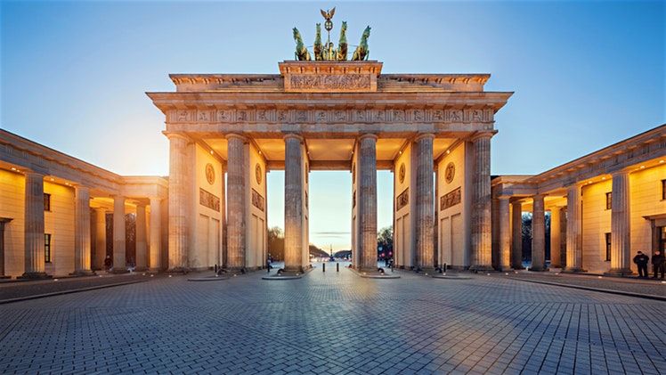
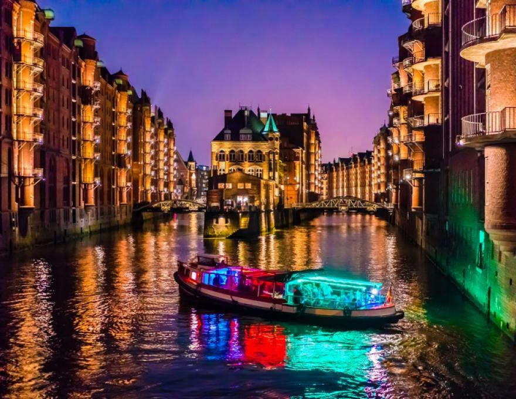
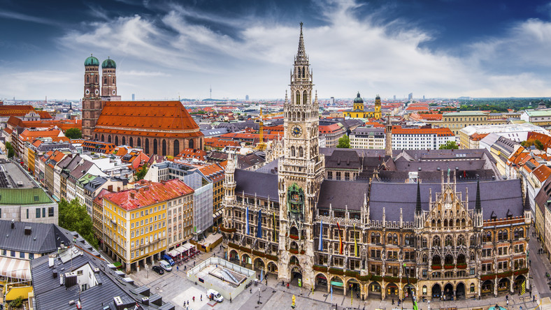
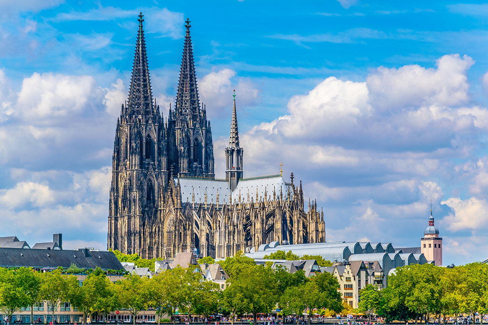
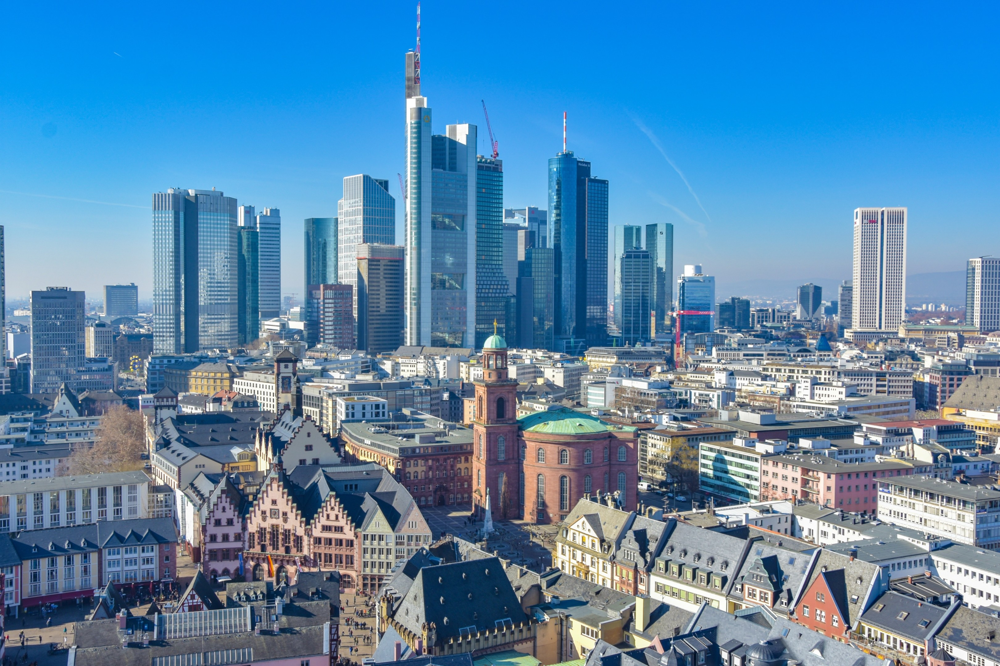

5 największych miast
(pod względem liczby mieszkańców)
Berlin
Stolica i zarazem kraj związkowy. Zajmuje powierzchnię ok. 892 km² i zamieszkuje go niespełna 3,7 mln osób. Jest największym miastem w Unii Europejskiej pod względem liczby mieszkańców.
Hamburg
Miasto w północnych Niemczech na prawach kraju związkowego niedaleko ujścia Łaby do Morza Północnego. Wolne miasto i zarazem niemiecki kraj związkowy o powierzchmi 755 km², ludność około 1,85 mln – drugie po Berlinie. Największy port morski kraju (ok. 140 mln ton przeładunku), wielki ośrodek przemysłowy (statki, elektrotechnika, przetwórstwo ropy, przemysł spożywczy) i finansowy. W 2011 roku miasto to otrzymało tytuł Europejskiej Stolicy Czystości.
Monachium
miasto na prawach powiatu w południowych Niemczech, stolica kraju związkowego Bawaria, siedziba rejencji Górna Bawaria, regionu Monachium, powiatu Landkreis München (do którego jednak miasto nie należy) oraz Stowarzyszenia Krajowego (Landesverband) Technisches Hilfswerk, trzecie pod względem liczby ludności miasto Niemiec, zamieszkiwane pod koniec 2019 r. przez niemal 1,5 mln osób.
Kolonia
Miasto na prawach powiatu w zachodnich Niemczech, w kraju związkowym Nadrenia Północna-Westfalia, stolica rejencji Kolonia.Liczba ludności - niecałe 1,1 mln. Jeden z najważniejszych historycznych ośrodków kultu religijnego w Europie. Leży nad rzeką Ren. Wizytówką miasta i historyczną dominantą jest gotycka katedra (Kölner Dom), siedziba arcybiskupstwa kolońskiego. Uniwersytet w Kolonii (Universität zu Köln) jest jedną z najstarszych wszechnic w Niemczech, w której kształci się ok. 44 tys. studentów. Kolonia jest najważniejszym gospodarczym, kulturalnym i historycznym miastem Nadrenii.
Frankfurt nad Menem
Miasto na prawach powiatu w Niemczech, w kraju związkowym Hesja, w rejencji Darmstadt. Ponad 760 tys., jedna z najważniejszych metropolii finansowych świata oraz znane centrum wystawiennicze.